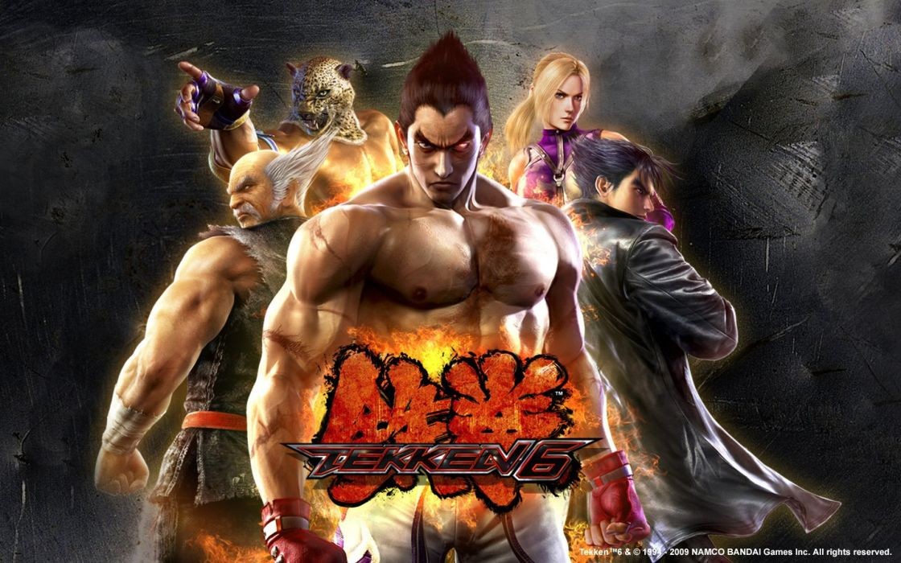

Date: 2007-11-26
Title: Tekken 6
Summary: A major entry introducing new mechanics, expanded roster, and large-scale battle modes.
Categories: Fighting, Main Series
Type: Game Files
File Size: ~7 GB
Format: ISO / Digital
Region: Japan / USA / Europe
Platform: Arcade / PS3 / Xbox 360 / PSP
Tekken 6 is a major installment in the Tekken series that introduced new gameplay mechanics such as the Rage system, which increases damage when a character's health is low. It also added the Bound system, allowing extended combos for more advanced gameplay. The game features a large roster of fighters, including newcomers like Lars Alexandersson and Alisa Bosconovitch. One of its biggest additions is the Scenario Campaign mode, a story-driven experience with beat-'em-up elements. Tekken 6 expanded both the gameplay depth and the narrative of the series.
Note: Support Original Game By buying Official CD of Tekken 6 . --Tekken 6 Can be Played By either a real Ps3,X360,PSP or By Ps3,X360,PSP Emulatores via Pc. ⬇ Download (PS3 Version) ⬇ Download (Xbox 360 Version) ⬇ Download (PSP Version)